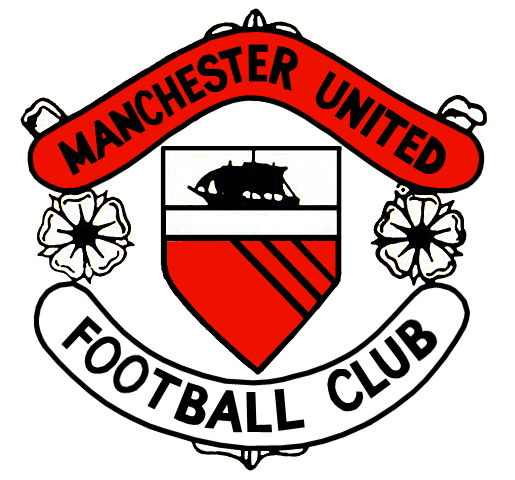
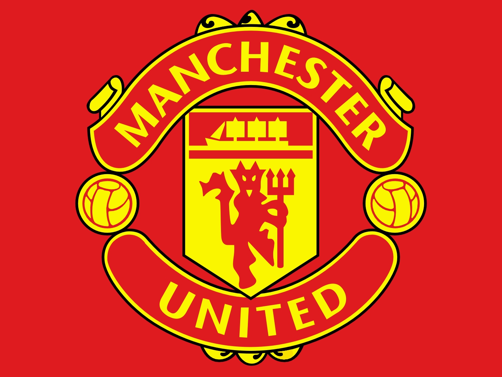

Грб Јунајтеда
Клупски грб потиче из грба Манчестер Сити Каунсела, иако је све остало од њега на тренутном грбу брод који једри.

Ђаво проистиче из надимка клуба "Црвени Ђаволи"; он је била укључен у клубске програме и шалове 1960-их и уграђен у клубски грб 1970. године, иако грб није био на грудима дреса до 1971. године (уколико екипа није играла у финалу Купа).
